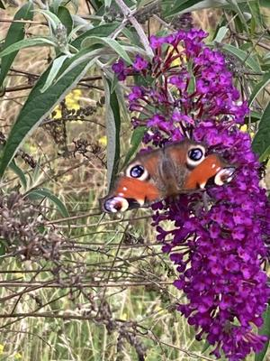
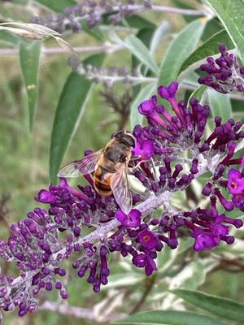
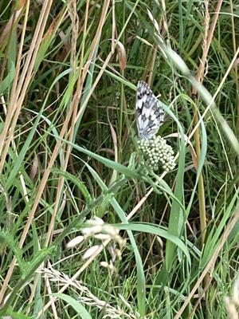
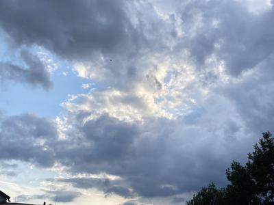
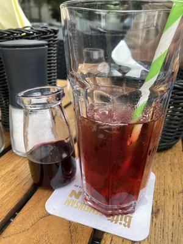

Fast ein Ferientag
Es sind Ferien, ich habe heute im Homeoffice/ Praxistag einige freie Termine im Kalender. Also Zeit um auch ein paar schöne Dinge zu tun und das am 8. Juli 2026 und damit wieder Zeit für #8sammeln von Susanne Wagner.
Der Tag startet mit angenehmen Temperaturen und einem bewölkten Himmel.Da läuft unsere betagte Fellnase etwas leichter. Ihre Langsamkeit gibt mir Zeit meine Umgebung wahrzunehmen.
Unser Flieder vor der Haustür blüht und ist gut besucht. Neben einem Zitronenfalter, der aber nicht still sitzen konnte für ein Foto, habe ich ein wunderschönes Tagpfauenauge beobachten können. Und dieser hat sich in Position geworfen. Ich konnte mich gar nicht satt sehen.
{kind=link}

Tagpfauenauge
Dann war da noch eine Mistbiene. Meine Bestimmungsapp hat sie auch als Schlammbiene bezeichnet, weil sie die Larven gerne in den Schlamm legt. Sie ist eine Schwebfliegenart. Wieder was dazu gelernt.
{kind=link}

Mistbiene
Zu guter Letzt begleitete uns noch ein Schachbrett-Schmetterling. Es ist so schön dieses Jahr wieder mehr und vielfältige Schmetterlinge zu sehen.
{kind=link}

Schachbrett-Schmetterling
Wieder zu Hause gab es Frühstück mit meinem Lieblingsmenschen auf der Terrasse. Der Himmel bietet ein sich schnell änderndes Schauspiel aus hellen und dunkleren Wolken. Ich sah Fuchur den Drachen aus der unendlichen Geschichte und einen Zwerg mit dicker Nase. Ich liebe es Wolkenbilderraten zu spielen.
{kind=link}

Wolkenbilder
Anschließend wässerten wir gemeinsam den Garten. Mein erster Termin war erst am späten Vormittag. Unter der Woche so viel gemeinsame Zeit zu haben ist ein Luxus den ich sehr genieße.
{kind=link}
Entspannt auf dem Gartenstuhl
Eigentlich wollten wir zusammen kochen, aber das Wetter war so angenehm, dass wir in die Stadt sind und uns rausgesetzt haben. Der Markt war gerade zu Ende und es gab viel zu sehen. Daraus könnte ich lauter kleine Geschichten entwickeln.
In dem Lokal gibt es selbstgemachten Eistee. Du bekommst ein großes Glas mit Eiswürfeln, eine kleine Karaffe mit heißen schwarzen Tee (wie lange der zieht bestimmst du selber) und eine kleine Karaffe mit Fruchtsirup deiner Wahl. Ich mag Johannisbeere. Langsam den Tee über das Eis geben, den Sirup hinzu – ich brauche nie so viel wie vorhanden ist und dann hmmmmmm – genießen. Dazu einen leckeren Salat und ich bin rundherum zufrieden.
{kind=link}

Eistee
Den Abschluss heute macht das Coworking in Kometsschreibzeit von Stephanie K. Braun . In dieser Zeit ensteht die Rohfassung für diesen Beitrag. Aber ich nutze die Zeit auch um Sachen für die Steuer zusammen zu suchen. Nachdem heute morgen vier Briefe vom Finanzamt kamen. In jedem war was anderes was sie wollen. Nerv, aber in Gesellschaft geht es leichter.
So kommt mein Fast-Urlaubstag langsam zu Ende. Vielleicht bleibt heute Abend dann noch Zeit für eine Lesestunde auf der Terasse.
Kommentare